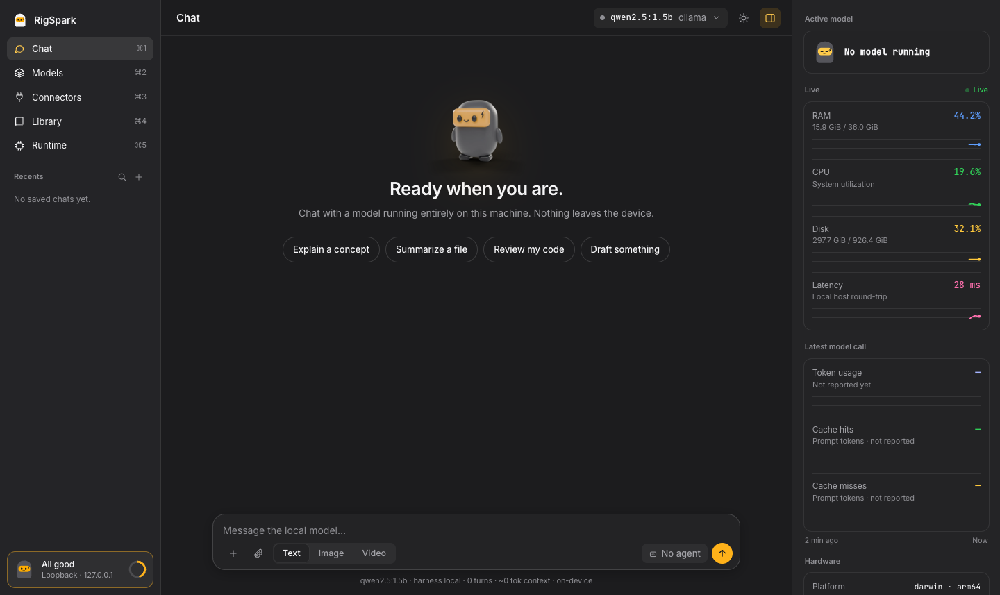
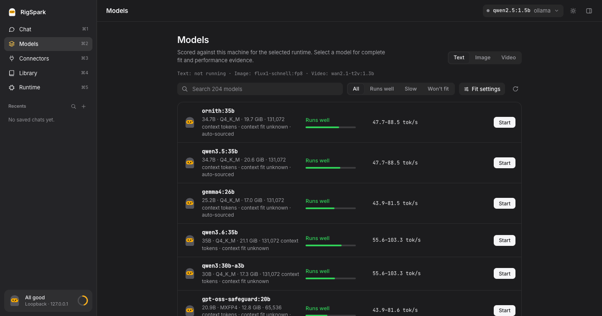

Fits in memory and meets bandwidth. Shows an estimated tok/s range.
v2.3.0 Local image & video generation →
Hardware-aware local inference
Run the right local model. Before you download.
RigSpark scores your hardware and gives every model a yes, slow or no verdict with estimated tok/s before you download. Then it verifies, serves and chats with your pick.
cargo binstall rigspark-cli rigspark-gui
- 69
- curated models
- 4
- native runtimes
- 0
- network calls for advice

rigspark recommend output and the browser workspace. Unmute for sound.Fits, but memory bandwidth limits speed. Still shows the estimate.
Won’t fit. You see the binding reason, so you can skip the download.
One engine, three views
See the decision, not just the dashboard.
Real RigSpark screens, from hardware fit to verified local chat.



New in 2.3.0
Generate images and video on your own machine
RigSpark now drives your local ComfyUI to create images with FLUX.1 schnell and short clips with
Wan 2.1. Weights are pinned and SHA-256 verified, workflows are built in, and nothing leaves
127.0.0.1: no cloud nodes, no paid credits, no account keys.
- Straight from chat. Flip the composer to Image or Video and type “create mount fuji”. The result renders inline, never sent to the LLM.
- Every surface.
rigspark generate image|video, an interactive terminal form, and a Create view in the browser workspace. - Honest fit.
catalog --generationgives a weight-memory verdict; generation speed staysunknownuntil it can be sourced.
rigspark gui on an Apple M4 Max.How it works
One command ranks every model for your machine
rigspark recommend detects your RAM, GPU and free disk, sizes each model’s
weights and KV cache, and ranks the offline catalog. Models that can’t fit are listed
separately with the reason, and the top pick is one command away.
- 1Score Hardware is detected locally. Unknown figures stay
unknown; nothing is invented. - 2Check
rigspark can-run qwen3:8bgives one verdict and exits non-zero only on no, so it works as a CI gate. - 3Run
rigspark uppulls, verifies the weights and serves on127.0.0.1. Thenrigspark chat.
$ rigspark recommend Ranked local LLMs for arm64/darwin (34.0 GiB ram usable): Rank Model Params Est. Mem Verdict Est. tok/s 1 qwen3:30b-a3b 30B 19.9 GiB ✓ yes 55.6–103.3 2 kimi-vl-a3b 16B 10.7 GiB ✓ yes 55.6–103.3 3 qwen3:32b 32B 21.6 GiB ⚠ slow 5.2–9.7 4 deepseek-r1:32b 32B 21.3 GiB ⚠ slow 5.2–9.7 5 gemma3:27b 27B 18.6 GiB ⚠ slow 6.2–11.5 ⋮ Run the top pick: rigspark up qwen3:30b-a3b Won't fit (14): ❌ deepseek-r1:671b (ram-bound) ❌ llama3.3:70b (ram-bound)
Terminal UI Next release
A keyboard-first terminal UI, not just pretty text
Run rigspark with no arguments and a native terminal UI opens when your terminal is at least
60×16. Sort and filter a ranked table, read memory fit at a glance, and compare models side by side,
by keyboard or mouse. Accessible mode (--accessible) serves screen readers, and CI or piped
output falls back to plain text automatically.
unknown.
↑↓ navigate s sort v verdict filter Enter evidence y copy id q quit

rigspark up


Everything in one tool
From hardware check to local chat
AI Hardware Score
A 0–100 score names your bottleneck, and every catalog model gets a yes / slow / no verdict with est. tok/s before any download.
Context-window sizing
KV-cache-aware memory math with GQA-correct attention geometry. Re-rank at --context N, find each model’s ceiling with --max-context, or size a quantized cache with --kv-cache.
Portable memory
Chats are recorded to local memory. rigspark migrate --from qwen3:8b --to qwen3:14b carries it to a bigger model; preview with --dry-run.
Agents & skills
Reusable personas and instruction blocks, stored locally as markdown. Bundle skills into an agent or toggle them per message.
MCP connectors & tools
Attach Model Context Protocol servers, local stdio or loopback HTTP/SSE. The model calls enabled tools in an agentic loop, with your approval.
Inline images & graphs
Let an agent run code in your workspace; generated images and graphs render in the chat, served from a loopback-only artifacts endpoint.
Local image & video New
Generate with FLUX.1 schnell and Wan 2.1 through your own ComfyUI, from chat, the CLI or the terminal UI. Pinned weights, built-in workflows, loopback only.
Signed catalog updates
Explicitly download and atomically activate a verified catalog without replacing the app. Revision rollback and verified fallback protect advice.
Offline TeX rendering
Pinned KaTeX assets render equations locally while malformed or unsafe rich responses stay behind the sanitized Markdown boundary.
Evidence-backed models
Bonsai, Qwen3.5 and Qwen3.6 carry pinned provenance. Unsourced throughput and attention geometry remain visibly unknown.
Keyboard-first TUI Next
Sort any column, filter by verdict, fuzzy-search names and compare up to four models side by side. Mouse, light and high-contrast themes (RIGSPARK_THEME) included.
Streaming terminal chat Next
Replies stream as they arrive with headings, lists and code rendered. Scroll back with PgUp, copy the last reply with Ctrl+Y, and see first-output and total time.
Live lifecycle checklist Next
up, switch and down show each observed stage as done, failed or unconfirmed, with elapsed time. Stage completion never claims overall success.
Browser workspace
Pick a model that fits, start it, chat with it
rigspark gui opens a local-first workspace on 127.0.0.1 that uses the same
engine as the CLI: the same verdicts, the same verified up lifecycle. Local chat stays on
your machine; cloud harnesses and external tools send data only to their own providers.



stdio commands or loopback HTTP/SSE; enable, disable and inspect each one’s tools.- loopback-only
- host-header checked
- same engine as the CLI
- pluggable harnesses
Built to be trusted
Honest numbers, local by default
Offline advice
recommend, can-run and doctor make no network calls. Advice comes from a curated, cited catalog, so it is reproducible.
Unknown stays unknown
When a figure can’t be sourced, RigSpark prints unknown. Models are still ranked by weights, never silently dropped. Estimates are not benchmarks.
Fail-closed integrity
up and switch verify pulled weights against the catalog digest and refuse to serve anything that doesn’t match.
Loopback only
Model servers and the browser workspace bind to 127.0.0.1. Nothing is exposed to your network.
Curated catalog
69 models. Evidence attached.
The catalog is an offline, reviewable dataset, not a scrape. Each entry ties a model to its
architecture, context, quantizations, artifact size, integrity digest and official sources.
Activate independently published snapshots with catalog --update, or use
--kv-cache q8_0 or q4_0 to re-size advice for quantized KV caches.
- 69
- curated models
- 4
- runtimes
- SHA-256
- artifact integrity
- Weekly
- coverage audit
- Curate Architecture, license, capabilities, context, quantization and official sources are reviewed and pinned.
- Bootstrap The snapshot deterministically generates the same offline advice dataset on every machine.
- Enrich Known Ollama artifacts gain exact model-layer bytes and content digests without rewriting curated facts.
- Audit Freshness and upstream coverage produce review candidates, never automatic admissions.
Honesty gate: missing attention geometry stays unknown. Coverage checks can’t enumerate missing tags inside a model already in the catalog.
Backends
Four runtimes, one workflow
- OllamamacOS, Linux, Windows · recommended defaultFull lifecycle
- llama.cppmacOS, Linux, Windows · GGUF from Hugging FaceFull lifecycle
- MLXApple Silicon · preferred when installedFull lifecycle
- LM StudiomacOS, Linux, Windows · you run the serverAttach-only
Auto-selected for your platform and installed runtimes; override with --backend. All bind 127.0.0.1 only.
Chat with any runtime from the workspace
A backend picker reaches every runtime directly: the same model chatting locally through each one.


Comparison
RigSpark vs. Ollama
Ollama is an excellent runtime. RigSpark adds a hardware-aware layer on top of it, and of three other runtimes.
| Feature | Ollama | RigSpark |
|---|---|---|
| Run inference | ✓ | ✓ |
| Hardware-aware model recommendations | – | ✓ |
| yes / slow / no verdicts + est. tok/s | – | ✓ |
| AI Hardware Score (0–100) | – | ✓ |
| Context-window sizing (KV-cache aware) | – | ✓ |
| Interactive terminal UI | – | ✓ |
| Browser workspace (loopback-only) | – | ✓ |
| Agents & skills library | – | ✓ |
| MCP connectors & tools | – | ✓ |
| Inline images & graphs in chat | – | ✓ |
| Accessible mode (screen readers) | – | ✓ |
| Multi-backend (4 runtimes) | – | ✓ |
| SHA-256 integrity verification | – | ✓ |
| Portable memory migration | – | ✓ |
| Offline deterministic advice | – | ✓ |

Install
One archive, three native binaries
Each release ships rigspark, the llmup alias and the rigspark-gui
workspace. No Node.js, Python or compiler needed: unpack, add the folder to your PATH, run.
Archives are unsigned. Verify them against
SHA256SUMS.
On macOS, clear quarantine after unpacking with xattr -dr com.apple.quarantine rigspark-*.
Homebrew, on macOS or Linux
brew install shashankswe2020-ux/tap/rigsparkPrebuilt, with cargo-binstall
cargo binstall rigspark-cli rigspark-guiFrom source, with Cargo
cargo install rigspark-cli --locked --bin llmup --bin rigspark && cargo install rigspark-gui --lockedContainer: an older CLI image that sees only the container’s resources
docker pull ghcr.io/shashankswe2020-ux/rigspark:latestCommands
The full local-LLM lifecycle
Every command supports --json and --help. Use --accessible for screen readers.
- recommend
- Default. Ranks the catalog for this machine; filter with
--task, size context with--context N. - can-run
- One verdict with the binding reason and est. tok/s. Exits non-zero only on no.
- doctor
- AI Hardware Score, bottleneck diagnosis, backend status and environment checks.
- catalog
- Browse models, inspect provenance with
--status, or explicitly activate a signed snapshot with--update. - up
- Pull with SHA-256 verification, then serve on
127.0.0.1. - chat
- Terminal chat with streaming, multi-line input (Ctrl+J) and session memory.
- gui
- Open the loopback-only browser workspace.
- generate
- Create an image or short video locally through ComfyUI; add
--tuifor an interactive form. - ls
- Show the active model and server endpoint.
- switch
- Change the active model without re-pulling, with a keyboard picker in the TUI.
- migrate
- Move conversation memory to another model; preview with
--dry-run. - down
- Stop the local server cleanly.
FAQ
Questions before you run models locally
Figures are RigSpark’s offline estimates, not benchmarks.
How do I find out which LLMs my computer can run?
Install RigSpark and run rigspark recommend. It detects your GPU, VRAM, RAM and free disk, ranks every catalog model with a yes, slow or no verdict and estimated tokens per second, and lists the models that won’t fit with the reason. rigspark can-run <model> checks a single model.
How much VRAM do I need to run an 8B, 14B, 32B or 70B model?
At Q4_K_M and default context, RigSpark estimates about 5.3 GiB for Llama 3.1 8B, 9.9 GiB for Qwen3 14B, 21.6 GiB for Qwen3 32B and 45.5 GiB for Llama 3.3 70B. Longer contexts add KV cache on top.
Can I run local LLMs on a Mac with Apple Silicon?
Yes. Apple Silicon GPUs share unified memory with the CPU, so RigSpark sizes models against system memory and auto-selects MLX for models with an MLX build, then Ollama, then llama.cpp.
Can RigSpark generate images and videos locally?
Yes. With your own ComfyUI running on 127.0.0.1, rigspark generate image or rigspark generate video installs pinned, SHA-256 verified FLUX.1 schnell or Wan 2.1 weights and runs a built-in workflow. You can also switch the chat composer to Image or Video in rigspark gui. Paid ComfyUI Partner nodes are refused and nothing is sent to the cloud.
Does RigSpark send my data anywhere?
Recommendations, can-run and doctor make no network calls and use a verified local catalog. The explicit catalog --update action downloads a signed snapshot; normal startup does not. Model servers and the browser workspace bind to 127.0.0.1 only.
Is RigSpark the same project as llmup?
Yes. RigSpark 2.0 renamed llmup. The llmup command remains as a compatibility alias, and the crates moved from llmup-* to rigspark-*. See the changelog for moving your data directory.
Know before you download.
Free and open source under the MIT license.